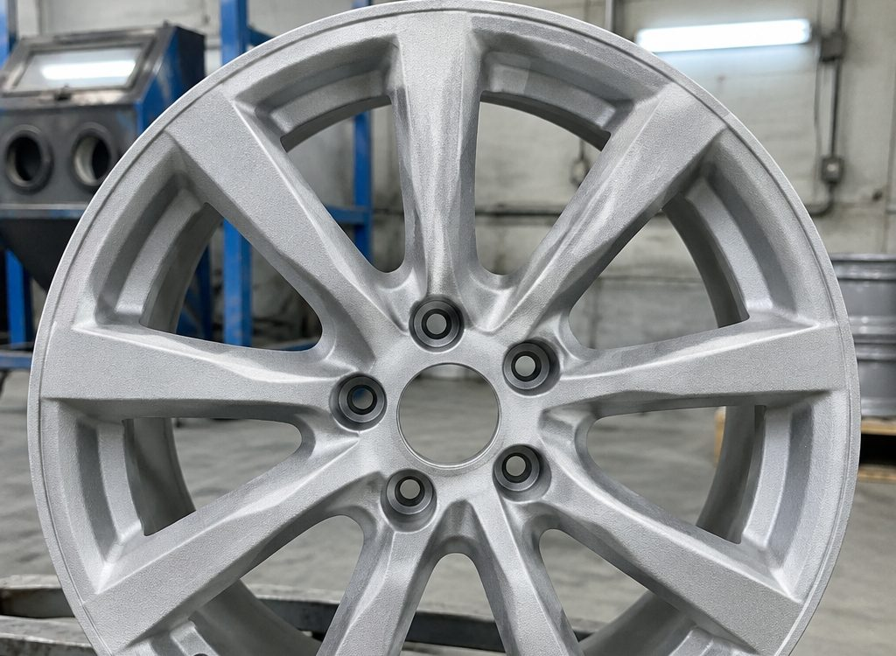
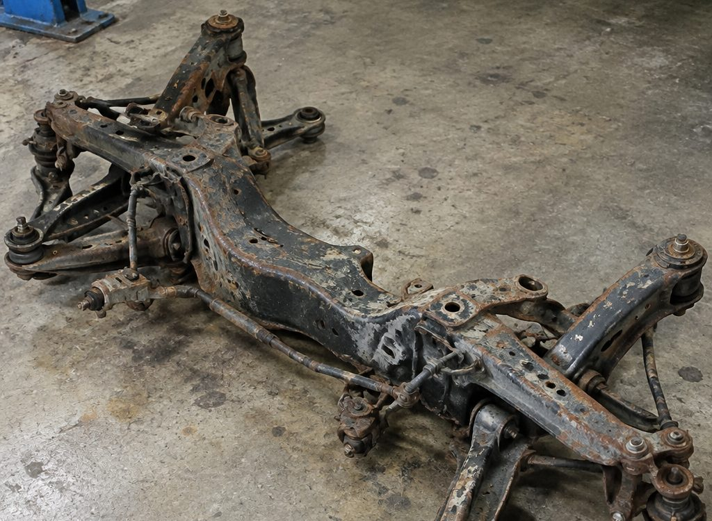
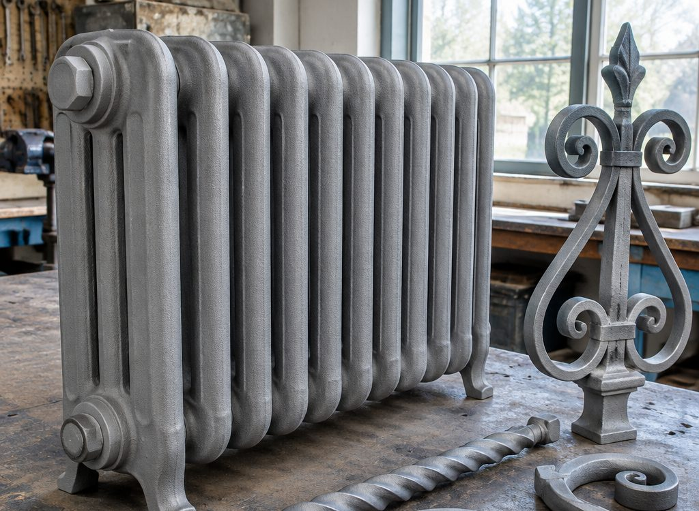
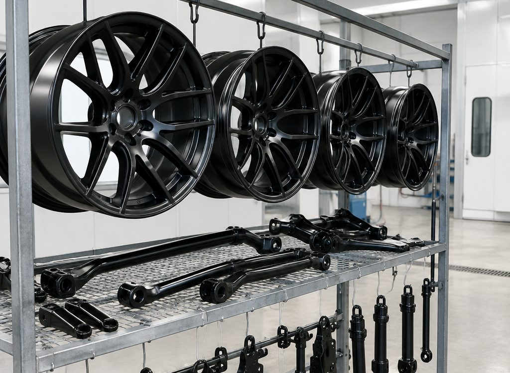
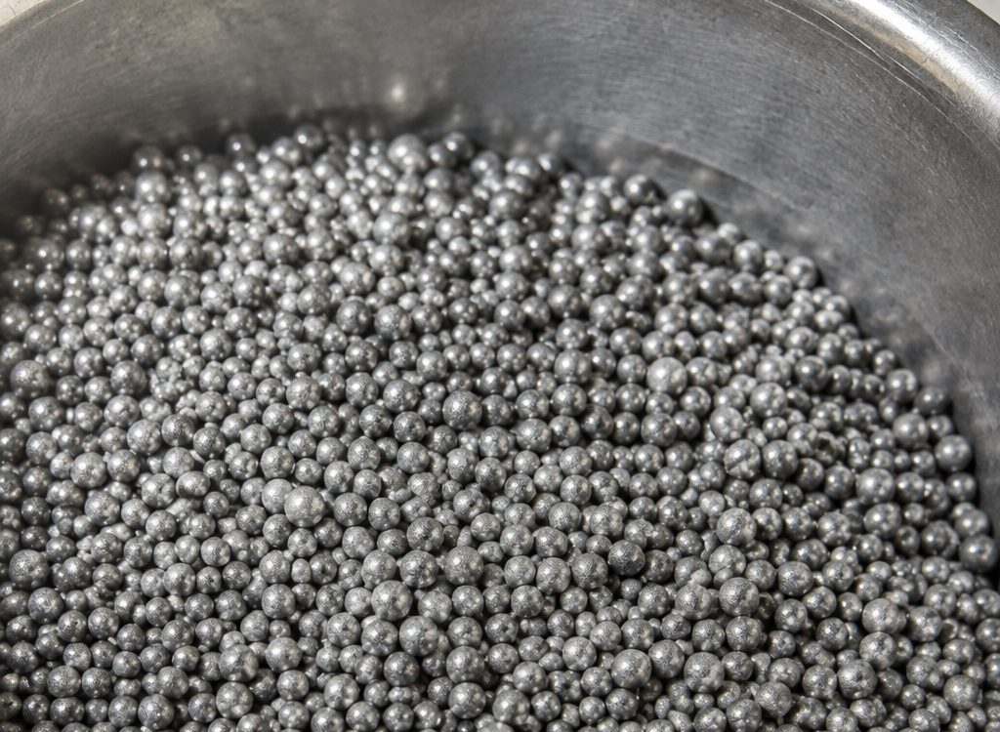

01 / Что чистим
Деталь любого вида, если проходит в камеру
Авто, мото, вело, отопление, спорт, мебель, производство. Выберите категорию — покажем, что делаем и что уточняем.
—

02 / Зачем дробь
Дробь не рвёт металл, а упрочняет его
Песок срезает и разрыхляет поверхность. Дробь работает как множество маленьких молотков: сбивает покрытие, оставляет плотный, ровный, слегка наклёпанный слой металла — и почти не пылит.
Для тяжёлых конструкций и толстого слоя краски это быстрее, а для последующей порошковой покраски — надёжнее: краска держится на такой поверхности иначе.
03 / Камера
Влезет ли ваша деталь
Габариты рабочей зоны — первое, что стоит проверить. Введите размеры, чтобы не везти зря.
Введите размеры детали в миллиметрах. Рабочая зона камеры: 1230 × 900 × 660 мм (Д×Г×В).
Укажите три размера детали в миллиметрах.
Ориентир по габаритам. Способ обработки и стоимость уточняем после фото.
04 / Как работаем
От фото до готовой детали
Присылаете фото
Деталь, состояние покрытия, количество. По фото сориентируем по стоимости и срокам.
Согласуем обработку
Что снимаем — краску, лак, окислы, ржавчину. Уточняем, нужна ли разборка и обработка полостей.
Обрабатываем в камере
Необитаемая камера, стальная дробь Ervin Amasteel, контроль по всей площади детали.
Отдаём и закрываем оплату
По факту работы или по предоплате: наличные, терминал, для юрлиц — безнал. Гарантия на работы.
05 / Работы
Металл до и после
Показываем типовые задачи: диски, суппорты, подвеска, чугун, ковка.




06 / Заявка
Пришлите фото — назовём цену
Стоимость зависит от площади, состояния покрытия и сложности детали, поэтому считаем индивидуально. Фото в мессенджер — самый быстрый способ узнать цену.
+375 (44) 542-70-77
Звонок, WhatsApp, Viber, Telegram — на этот номер.
Октября пр-т, 27, Гомель
Собственное производство, приём деталей по адресу.
07 / Вопросы
Спрашивают перед приездом
Почему дробеструйная обработка, а не пескоструйная?
Дробь после удара о деталь оставляет более прочную поверхность без «разрыхления» металла, в процессе почти нет вредной пыли, а на тяжёлых конструкциях и толстом слое покрытия она работает быстрее. Плюс после дроби поверхность даёт максимальную адгезию для порошковой покраски.
Какие габариты деталей вы берёте?
Рабочая зона камеры — 1230 × 900 × 660 мм по длине, глубине и высоте. Всё, что проходит по этим размерам, обрабатываем в камере. Если деталь крупнее — напишите, обсудим варианты: разборка на части или отказ без оплаты.
Что с ценой?
Стоимость считаем индивидуально: она зависит от площади, состояния покрытия и сложности детали. Пришлите фото в любой мессенджер — сориентируем по цене до того, как вы привезёте деталь.
Как оплатить?
По предоплате или по факту выполненной работы: наличными или терминалом. С юридическими лицами работаем по безналичному расчёту.
Даёте ли гарантию?
Да, гарантия на качество выполненных работ. Если после обработки обнаружится недоочищенный участок, покажите его — вернёмся к детали.
Можно ли сразу покрасить у вас?
Мы готовим поверхность под порошковую покраску — после дроби она максимально восприимчива к покрытию. По покраске скажите задачу заранее: обсудим, как удобнее — красить у нас или везти на своё производство.